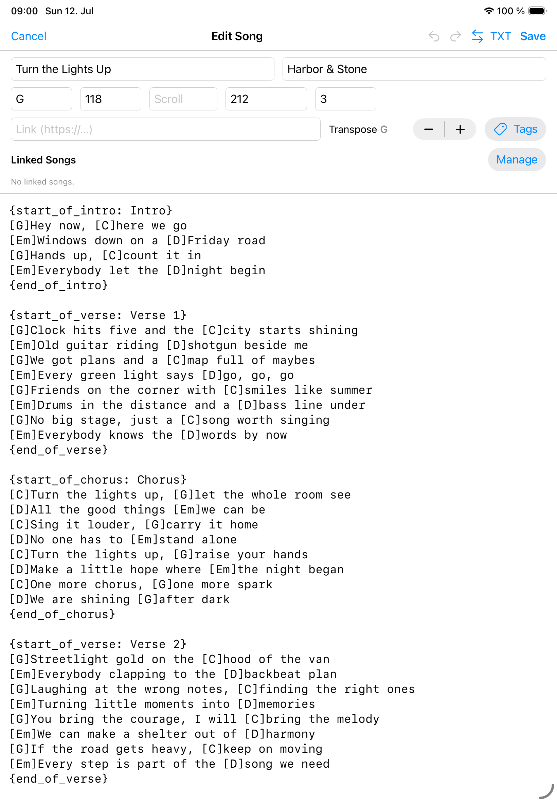

Charts
ChordPro
ChordPro songs give Songivo editable lyrics, chords, sections, metadata, transposition, and flexible stage layouts.

Edit a ChordPro song
- Open the song’s quick-actions menu and choose Edit Song.
- Update the required fields.
- Clean up the ChordPro source text with section directives and chord placement.
- Use linked songs when related charts should travel with the main song.
- Save and check the rendered chart before rehearsal.

Transpose and notation
Songivo can display transposed chords without rewriting the stored source text.
- Standard notation is best for common chord charts.
- Nashville notation supports number-based band workflows.
- Roman notation supports functional analysis and teaching contexts.
Display options
Use song and appearance settings to adjust font size, ChordPro layout mode, chord and lyric colors, column behavior, split-page behavior, and chord block alignment.